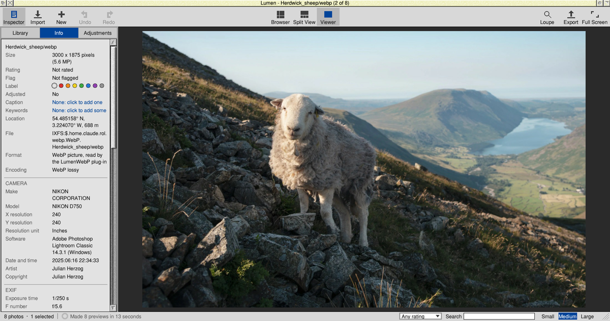
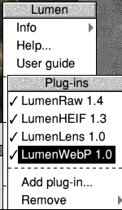
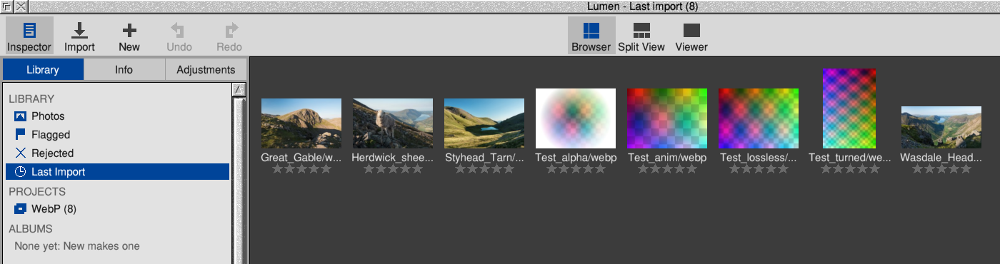
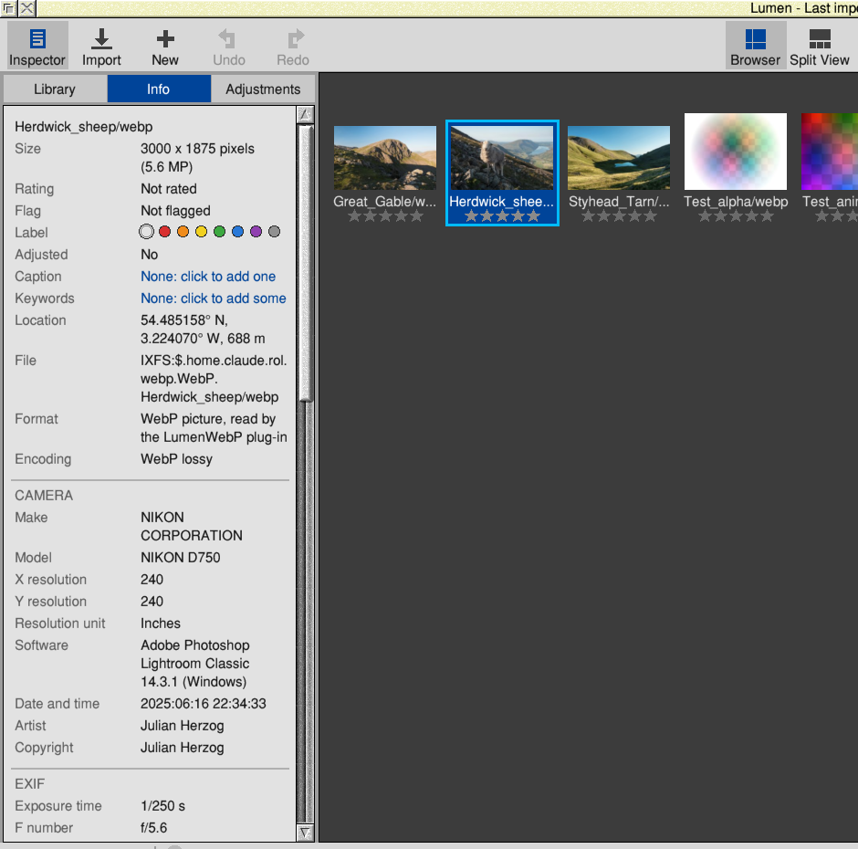

Introduction
WebP is Google's picture format, in files ending .webp. Web pages use it everywhere, and so do many phones, messaging apps and image editors. A WebP picture is either lossy, compressed as a frame of VP8 video (smaller than a JPEG of the same quality), or lossless, kept exactly (smaller than a PNG). Either kind can have transparency, and a WebP file can also be a short animation.
Lumen doesn't read WebP itself. It hands WebP pictures to a small separate program, LumenWebP, built on Google's libwebp. LumenWebP is a format plug-in: its description tells Lumen which files are WebP pictures, and Lumen asks it for their pictures and details.
Once it's installed, WebP pictures sit in Lumen's library beside your JPEGs, HEIF photos and raw files, and you rate, adjust, export, print and map them in the same way.
About this guide
This guide is about the plug-in. Everything else about Lumen is in the Lumen User Guide: choose User guide from the menu on Lumen's icon bar icon.
The pictures are screenshots of Lumen 0.0.39.2 with LumenWebP 1.0 on RISC OS 5. The four Wasdale photos in them are by Julian Herzog (Wikimedia Commons, CC BY 4.0), the same photos as in the Lumen User Guide, saved as WebP for this guide; the others are test pictures made for the plug-in's tests (see Credits).
What we assume you know
That you have Lumen and know your way round it a little: how to import photos and open one in the Viewer, the three mouse buttons (Select, Menu and Adjust), and how to drag a directory from a Filer window.
The boxes in this guide
Part I: Getting StartedWhat the plug-in is, and installing it
1 What LumenWebP does
Lumen asks LumenWebP for two things.
- A small picture for the thumbnail. LumenWebP decodes the picture straight to thumbnail size, which takes a moment.
- The picture itself. When you open a WebP picture in the Viewer, zoom in, or export or print it, LumenWebP decodes it at the size Lumen needs. From then on Lumen treats it like any other photo.
Each time, LumenWebP also gives Lumen the picture's details from its EXIF, if it has any: the camera, the exposure, the date, which way up it goes, and where the EXIF is in the file, so the Info tab can list all of it and Lumen can find where the picture was taken for Show on map.
What LumenWebP doesn't do
- It never changes or writes to your WebP files. Like all of Lumen, it only reads them.
- It doesn't save WebP files. Export makes JPEGs or PNGs, as for any photo.
- It doesn't play animations. For an animated WebP, Lumen shows the first frame.
2 Installing LumenWebP
What you need
- Lumen 0.0.38 or later. LumenWebP lives inside Lumen, in
!Lumen.Plugins.WebP. - The same computer Lumen needs: RISC OS 5.30 or later on an ARMv7 machine with VFPv3, such as a Raspberry Pi 4, 400 or CM4, with the SharedUnixLibrary and ARMEABISupport modules from PackMan. LumenWebP uses NEON where the processor has it, and works without it too.
- Memory: LumenWebP needs memory only while it works: about 40 MB to decode a 12 megapixel lossy picture at full size, and about 90 MB for a lossless one or one with transparency. Thumbnails need much less.
With PackMan
- Open PackMan and find the LumenWebP package.
- Install it. PackMan puts it inside Lumen, in
!Lumen.Plugins.WebP. - If Lumen is running, quit it and start it again. Lumen looks for plug-ins when it starts.
By hand, from the zip file
LumenWebP also comes as a zip file, LumenWebP-1.0.zip, laid out as it goes into Lumen: !Lumen.Plugins.WebP.
- Open the zip file (with SparkFS, or unzip it into a directory).
- Open the
!Lumendirectory inside it (hold Shift and double-click it), thenPlugins. You'll see a directory calledWebP. - In Lumen, choose Plug-ins → Add plug-in... from the menu on Lumen's icon bar icon.
- Drag the
WebPdirectory into the Add plug-in window. Lumen copies it into its own Plugins directory and uses it at once, without restarting.
You can also drag the WebP directory straight onto Lumen's main window.
Checking it's working
Choose Plug-ins from the menu on Lumen's icon bar icon. LumenWebP is listed as LumenWebP 1.0, with a tick when it's on.

LumenWebP tells Lumen the MIME type it reads, image/webp. If your MimeMap (InetDBase:MimeMap) gives it a RISC OS filetype, Lumen imports files of that type whatever they're called, and lists it on its File types menu so a double-click can open them in Lumen.
/webp on RISC OS) and drag it into Lumen's window. A thumbnail appears within a second or two. Double-click it to open it in the Viewer.Part II: WebP Pictures in LumenImporting, looking, adjusting and exporting
3 Bringing WebP pictures in
Import WebP pictures as you would any others: drag a directory or the files into Lumen's window, or use Import on the toolbar. Lumen knows them by their ending, webp, in capitals or not, and by the first bytes of the file, so one with another name is found too.

4 Looking, adjusting and exporting
Double-click a WebP picture, as for any other. Lumen asks LumenWebP for a picture the size of the Viewer, then the full size in the background for 100% and the loupe.
- Transparency: Lumen has no transparency of its own, so a WebP picture with transparent parts is laid on white.
- Animations: Lumen shows the first frame, on the animation's own canvas.
- Which way up: if the picture's EXIF says it was taken on its side, Lumen turns it upright, as for a JPEG. Lumen's own turning ([ and ]) works on top.
A WebP picture is just a photo to the rest of Lumen. Everything in the Adjustments tab works on it, and Export and Print work the same. Exports are JPEG or PNG, with the picture's EXIF, caption and keywords. A WebP picture with a position in its EXIF can be shown on a map with RiscOSM, like any other.
5 What the Info tab tells you
Select a WebP picture and click the Info tab. The Format line says WebP picture, read by the LumenWebP plug-in. Under it, Encoding says how the picture is coded:
| Encoding says | Meaning |
|---|---|
| WebP lossy | Compressed like a JPEG (as VP8 video): most WebP pictures. |
| WebP lossless | Kept exactly, like a PNG: screenshots, drawings and logos, usually. |
| ..., with transparency | It has transparent parts, which Lumen lays on white. |
| ..., animated (8 frames) | An animation: Lumen shows its first frame. |

Part III: Looking After the Plug-inSwitching it off and removing it
6 Switching it off and removing it
Choose Plug-ins from the menu on Lumen's icon bar icon (or from the main menu over the Browser).
Choose LumenWebP 1.0 to switch it off: the tick goes. LumenWebP stays installed, but Lumen doesn't use it, and remembers that next time it starts. Choose it again to switch it back on. While it's off, WebP pictures keep their thumbnails, stars, albums and adjustments, but opening one shows a message instead of the picture.
Remove → LumenWebP deletes LumenWebP from Lumen, after asking. Your WebP pictures stay in the library, with their stars and adjustments; they just can't be opened until you install it again.
Part IV: The Part of TensQuick answers
7 Ten problems and what to do about them
| Problem | What to do |
|---|---|
| WebP pictures aren't imported | LumenWebP isn't installed, or Lumen is older than 0.0.38. Install it (Chapter 2), then import the directory again. |
| "...the LumenWebP plug-in that reads them is switched off" | Tick LumenWebP in Plug-ins on Lumen's icon bar menu, then open the picture again. |
| "...The LumenWebP plug-in that reads them needs a newer Lumen" | This LumenWebP was made for a newer Lumen than yours. Update Lumen. |
| "The LumenWebP plug-in couldn't read this photo (...)" | The file is damaged or cut short (a download that didn't finish, say), or isn't a WebP picture. Try another copy. |
| "The LumenWebP plug-in stopped without finishing (perhaps out of memory)" | Decoding needs memory for a moment (Chapter 2). Quit other big programs and try again. |
| "Lumen has no plug-in for this photo's format now" | LumenWebP was removed. Install it again. |
| A picture's transparent parts are white | Normal: Lumen lays transparency on white. |
| An animation doesn't move | Normal: Lumen shows the first frame only. |
| A picture has no date taken | It has no EXIF (most from the web don't). Lumen uses the file's date. |
| Remove says the plug-in was installed by PackMan | Use PackMan to remove it, so PackMan knows it's gone. |
8 Ten things for experienced users
- It's a command-line program.
LumenWebP thumb SRC IMAGE INFOwrites the picture, 512 pixels at most, as a binary PPM;LumenWebP decode SRC IMAGE INFO MAXSIDEdecodes it to a PPM no bigger than MAXSIDE (0: full size). Run with no arguments, it prints its version and libwebp's. - INFO is a text file of
key=valuelines:width,height,orientation(from the EXIF; Lumen turns the picture),make,model,iso,exposure,fnumber,focal,taken,encoding, andexif=OFFSET LENGTH, where the EXIF chunk's TIFF data is in the file; orerror=.... - Files appear whole or not at all: written under a temporary name and renamed when complete. With Lumen 0.0.38.7 or later, the picture can instead be handed over in memory, in a dynamic area, without going through the disc.
- The plug-in description,
!Lumen.Plugins.WebP.Plugin, follows Lumen's format plug-in API 1:Format: WebP picture,Extensions: webp,MIME: image/webpandSignature: 8 WEBP(a RIFF file whose form type is WEBP). - Scaling as it decodes: libwebp makes the picture smaller as it decodes it, row by row, so a thumbnail of a big picture never needs the full size in memory.
- NEON: libwebp's NEON code (the VP8 transforms, loop filters and prediction, YUV to RGB, upsampling, the lossless transforms and the scaler) is used when VFPSupport_Features says the processor has NEON, and the plain C code otherwise.
*Set Lumen$NEON 0forces the plain code. Full-size pictures are identical either way; scaled ones can differ by a level or two in a few pixels at the edges. - Tested for RISC OS's alignment rules: RISC OS stops a program that reads memory at an unaligned address. The tests run LumenWebP on ARM under QEMU with that rule, with NEON and without, and check every picture against Pillow's decoding.
- Transparency is laid on white with each colour as c×a/255 + 255×(1 − a/255), rounded; animations give their first frame, scaled with the canvas and placed at its offset on white.
- How Lumen runs it: in a task window, one job at a time, sharing the queue with LumenRaw and LumenHEIF; job files are in
<Wimp$ScrapDir>.LumenRaw. - Source and licences: LumenWebP is © Andrew Youll, 2026, under the MIT licence; its source is part of Lumen's source (
plugins.webp, anddeps.build-webp.sh, which builds libwebp for it). libwebp is © Google Inc., under its BSD licence, with Google's patent grant for WebP.
Credits and licences
The four Wasdale photos in this guide (Great Gable, Herdwick sheep, Styhead Tarn and Wasdale Head) are by Julian Herzog, from Wikimedia Commons, under the Creative Commons Attribution 4.0 licence (CC BY 4.0), as in the Lumen User Guide. They were saved as WebP for this guide. The test pictures were made for LumenWebP's tests.
LumenWebP is © Andrew Youll, 2026, and is free software under the MIT licence. It is built on libwebp (© Google Inc., BSD 3-clause licence, with Google's additional patent grant); both texts are in !Lumen.Plugins.WebP.Licence. WebP is a trademark of Google LLC, used here only to say which pictures work.